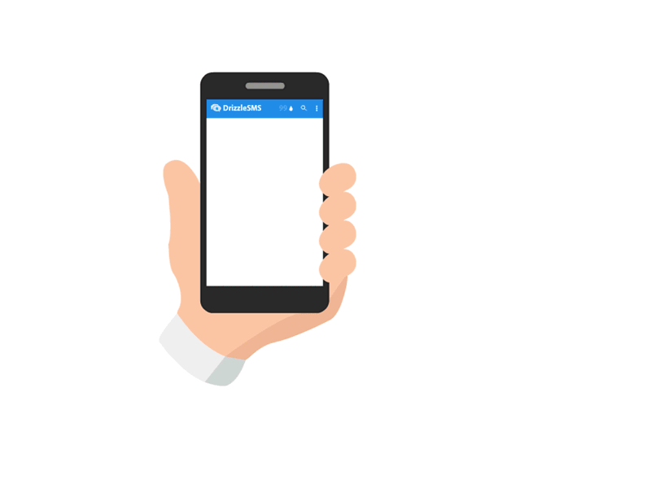

Безопасность мобильных устройств в интернете

Безопасность мобильных устройств – это набор методов защиты данных на мобильных устройствах, таких как смартфоны и планшеты. Это еще один вид интернет-безопасности.
Как узнать, прослушивается ли телефон
 Смартфоны могут подвергнуться прослушиванию, особенно в результате взлома или получения root-доступа. Прослушивание позволяет злоумышленникам слушать ваши телефонные разговоры и читать сообщения. О взломе телефона могут свидетельствовать такие признаки, как необычный фоновый шум при звонках, быстрый расход заряда батареи телефона и странное поведение устройства.
Смартфоны могут подвергнуться прослушиванию, особенно в результате взлома или получения root-доступа. Прослушивание позволяет злоумышленникам слушать ваши телефонные разговоры и читать сообщения. О взломе телефона могут свидетельствовать такие признаки, как необычный фоновый шум при звонках, быстрый расход заряда батареи телефона и странное поведение устройства.
Как удалить шпионские приложения с телефона
При появлении признаков шпионских приложений на вашем смартфоне проверьте установленные приложения. Удалите все приложения, в надежности которых вы не уверены или не помните, что устанавливали их.
Также может помочь обновление операционной системы телефона и более радикальные меры, например, сброс настроек телефона до заводских. Несмотря на то, что эти действия могут вызвать некоторые неудобства, рекомендуется их выполнить, если вы считаете, что ваш телефон был скомпрометирован.
Для выявления и удаления вирусов и вредоносных программ с телефонов Android можно использовать Антивирус для Android.